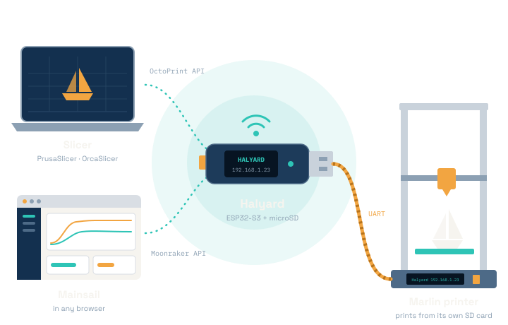
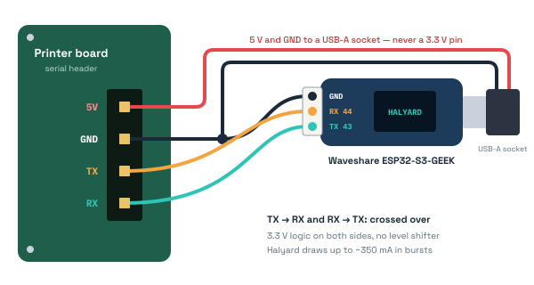

v@VERSION@ · open source · GPL-3.0-or-later
Your Marlin printer, on WiFi. No Raspberry Pi.
Halyard is a print server on a cheap ESP32-S3 stick, powered by the printer. Send G-code straight from your slicer, run the printer from Mainsail in your browser, and let it print from its own SD card.
Install with the web flasher Chrome or Edge, with the GEEK on USB
No LinuxNo second power supplyNo cloud

Why Halyard
A print server that can’t ruin a print
Halyard hands each file to the printer's own SD card and lets the printer feed itself. Everything else, from slicer uploads to Mainsail's dashboards, sits on top of that one rule.
-
The printer feeds itself
Each file is copied to the printer's own card and started there. The print carries on if Halyard restarts or loses WiFi, so even a firmware update mid-print is fine.
-
Upload from your slicer
PrusaSlicer and OrcaSlicer see an OctoPrint host. Send, or Upload and Print, and the file is on Halyard's card in seconds, with its thumbnails and metadata.
-
Mainsail in your browser
A light fork of Mainsail, served from Halyard's card. Klipper's buttons are translated into Marlin's G-code, and panels for features your printer lacks stay hidden.
-
Ask, don’t configure
M115tells Halyard what the printer can do, so there are no board profiles. Stock Marlin works with none of the optional features; each one it finds is put to use. -
Powered by the printer
Three wires and 5 V from a serial header on the board. No Linux to maintain, no second power supply, and no cloud account.
-
Updates with a safety net
Firmware and Mainsail update from Mainsail's Update Manager. New firmware boots on trial and goes back to the old one if it fails.
How it works
From slicer to first layer
Files land on Halyard's card first. Only when you press Print does Halyard copy the file to the printer's card and start it there. Nothing is copied or started without your command.
Quick start
Printing over WiFi in five steps
One install over USB, one text file, three wires. After that, everything happens over WiFi.
What you need
- A Marlin 2.x printer with an SD card slot and a free serial header
- A Waveshare ESP32-S3-GEEK
- A microSD card, FAT32, 32 GB or less
- Three wires, and 5 V from the printer (a USB-A socket is simplest)
- Chrome or Edge on a desktop, for the one-time install
-
Install the firmware, once, over USB
Open the web flasher in Chrome or Edge. Plug the GEEK into the computer, press Install and pick its port, and let it erase the device. When it says the installation is complete, unplug the GEEK and plug it back in.
-
Prepare the card
Download
halyard-card-<version>.zipfrom the latest release and unzip it onto the card. Openhalyard.cfgin a text editor and fill in your network under[wifi]. Then put the card in the GEEK.# halyard.cfg, on the card [wifi] ssid: MyNetwork password: my secret password -
Wire it to the printer
Halyard needs a serial port (a UART) on the printer's board, the one Marlin talks G-code on, and 5 V to run from. With the printer switched off:
- Find a serial header with TX and RX pins (or the processor's pin names, such
as
PA9/PA10). Headers for a touchscreen (TFT), a WiFi module (WIFI,ESP) or an accessory (UART,AUX) usually have one.EXP1/EXP2and the board's USB port won't do. - Check that Marlin talks on it:
SERIAL_PORTorSERIAL_PORT_2inConfiguration.h, at 250000 or 115200 baud. If neither names it, enable it asSERIAL_PORT_2withBAUDRATE_2 250000and reflash Marlin. A port used by a touchscreen can't be shared: the screen comes off. - Wire three signals, crossed over: the header's TX to the GEEK's RX (GPIO44), RX to TX (GPIO43), and GND to GND. Both sides use 3.3 V logic, so no level shifter is needed.
- Power the GEEK from 5 V, most simply through a USB-A socket wired to a 5 V pin and GND. Never use a 3.3 V pin: an ESP32 browns out on it. Halyard draws up to about 350 mA in bursts.
- Check once more that TX goes to RX, RX to TX, and that nothing is wired to a 12 V or 24 V pin, then switch the printer on.

- Find a serial header with TX and RX pins (or the processor's pin names, such
as
-
Power on
The printer's screen shows Halyard and its address. Open that address in a browser: that's Mainsail, running on Halyard.
http://halyard.local/works too, where your system resolves.localnames.The printer's own screen ( M117) -
Add Halyard to your slicer
In PrusaSlicer or OrcaSlicer, add a physical printer of type OctoPrint at Halyard's address. Test the connection, then Send, or Upload and Print. When you start a print, Halyard copies the file to the printer's card and starts it there.
Physical printer
- Host type
- OctoPrint
- Hostname
- 192.168.1.23
- API Key
- not needed at home
Connection to OctoPrint works correctly.
If something is wrong
- The printer's screen says what's wrong
Halyard: no SD card·Halyard: no WiFi set·Halyard: can't join NAME(wrong network name or password).- Nothing on the screen?
- Check the wiring (TX and RX crossed, a common GND), that the header is the port
Marlin's
SERIAL_PORTnames, and that the baud rate is 250000 or 115200. - The card isn't seen
- It must be FAT32, and so 32 GB or smaller. Bigger cards come as exFAT, which the firmware can't read.
halyard.localdoesn't open- Use the IP address from the printer's screen. Browsers installed as Flatpaks can't
resolve
.localnames. - Halyard's console
- Plug the GEEK into a computer, open the web flasher and choose
Logs & Console.
helplists the commands, andwifishows or sets the network.
Technical reference
How Halyard works, in depth
The design, the settings, the update paths and how Mainsail's Klipper controls map onto Marlin. Firmware @VERSION@, on Arduino-ESP32 3.3 and ESP-IDF 5.5. The full reference is docs/firmware.md, and the reasons behind the design are in docs/decisions.md.
Architecture
Three layers, and the seam between them is the design. Only the link layer knows what it's plugged into.
lib/halyard/is portable C++ with no Arduino, driven bypoll(now_ms). Host tests run it against a simulated Marlin: full-featured, minimal, and stock 2.1.2.8.- The printer loop runs on core 1. The web server and the update task run on core 0.
- From the printer, Halyard needs a serial port and SD support. Nothing else.
- Not built yet, both optional: handing files over as USB mass storage, and live streaming.
![Three stacked layers between the slicer and Mainsail above and the Marlin printer below. Service layer (Service): the OctoPrint upload API, a Moonraker JSON-RPC subset, faked Klipper objects and Klipper commands in Marlin terms; it knows nothing about serial. Delivery layer (Library, Delivery): files, metadata and thumbnails on Halyard's SD; it hands a file to the printer's card (M28, binary when offered) only on your command. Link layer (Link, Printer): one UART with line numbers, checksums, resend and ok-based flow control; capabilities discovered from M115; the only layer that knows the board.](img/illustration-layers.svg)
Settings: halyard.cfg
Settings live in halyard.cfg at the card's root, in Klipper's format. Edit it
in Mainsail (Machine, halyard.cfg, then SAVE & RESTART) or on
a computer with the card in a reader. WiFi changes restart Halyard; the rest applies at
once.
| Section | Keys |
|---|---|
[wifi] | ssid, password, hostname |
[access] | trusted, api_key |
[printer] | binary_transfer, screen_messages |
[updates] | source (where the update files are; empty: Halyard's releases) |
- The WiFi password goes over the network as
********. Saving with the stars unchanged keeps it. - Mistakes are warnings, not errors: the setting keeps its default, and Mainsail's notification bell says why.
- An empty
api_keygets a new key, written into the file. - Without a card, Halyard runs from a copy of the last settings, kept in NVS.
screen_messages: offstops the messages on the printer's screen.
Access and security
Halyard follows Moonraker's model: trusted address ranges, or an API key. Set both in
halyard.cfg's [access] section, or with the console's
trust and apikey commands.
Trusted ranges
Need nothing
The default is the private address ranges, as in MainsailOS: anyone on your home network can use Halyard.
trust add 192.168.1.0/24
Everyone else
Send the API key
In the X-Api-Key header, or the slicer's API Key field. The key is made
at first boot. Refused requests get a 401, and in a browser it explains the fix.
apikey new
No TLS, and CORS stays open. The API key crosses the network in clear text, so keep Halyard on a network you trust.
Updates and rollback
Two update paths share one installer. Mainsail's Update Manager (the Machine page) is the everyday way; the built-in update page is the fallback.
halyard
The firmware. The check reads the latest release's SHA256SUMS; Update
writes firmware.bin to the other app slot and switches only once its
SHA-256 matches.
mainsail
The Mainsail this firmware ships with. Installed as one archive and swapped in only
when complete; the one before is kept as www.prev.
/halyard/
The fallback page, built into the firmware. Takes a firmware.bin, a
mainsail.zip or a card zip from your computer, and can go back to the
previous Mainsail.
New firmware boots on trial
- Write the other slot
- Boot on trial
- Answer an authorised request
- Confirmed
A reset before that, or no answer within 5 minutes, and the bootloader goes back to the previous image. An update is refused (409) while a file is being copied to the printer, and allowed during a print, since the printer feeds itself (Mainsail's own panel waits for the print to end).
Klipper’s commands in Marlin terms
Mainsail's buttons send Klipper commands. Halyard translates the ones Marlin has an equivalent for, reads settings back from Marlin's own reports, and leaves the rest out so Halyard's Mainsail hides those panels.
| In Mainsail | The printer gets | Without the feature |
|---|---|---|
| Jog and extrude buttons | the moves, then G90 and M82 | Always there |
| Z offset | M290 P0 Z… (babysteps) | No Cap:BABYSTEPPING: hidden |
| Z offset save | M851 Z (old + babysteps) | No Cap:Z_PROBE: no save button |
| Pressure advance | M900 K… (Linear Advance) | No answer to M900: panel hidden |
| Velocity and acceleration limits | M203 X… Y… · M204 P… T… | No M203/M204 reports: panel hidden |
| Square corner velocity, accel to decel, cruise ratio | nothing: Marlin has none | Always hidden |
| Speed and flow sliders | M220 S… · M221 S… | No report: the slider stays at 100 % |
| Endstops | M119 | Always there: every Marlin has M119 |
| Part fan | nothing: Marlin can't report the fan's speed | Always hidden; M106 S… in the console |
| Bed and extruder PID tune | M303 E-1 S60 C8 U1M303 E0 S210 C8 U1 | Bad heater id becomes the error |
CALIBRATE_Z_OFFSET | G28, then G30 at the bed's centre, then Mainsail's manual-probe dialog | No Cap:Z_PROBE: not listed |
Homed axes are mirrored from the G28s Halyard sent and forgotten
whenever the steppers may have gone off. Moves on an unhomed axis are refused, as Klipper
does: Marlin's software endstops only apply to homed axes. Nothing is saved on its own:
SAVE CONFIG (M500) keeps a calibration result, and is offered only with
Cap:EEPROM.
Make it faster
Halyard works with Marlin's stock settings and uses these when the printer has them. Each is optional, and each has a tested fallback (decisions.md, D5).
| Marlin option | What it gives |
|---|---|
BINARY_FILE_TRANSFER | Copies to the printer's card about 3× faster, checksummed and compressed |
RX_BUFFER_SIZE 1024, BAUDRATE 250000 | Faster, safer copies (the headers have no flow control) |
ADVANCED_OK | More commands in flight at once |
LONG_FILENAME_HOST_SUPPORT | Real file names on the printer's card, not just 8.3 names |
EMERGENCY_PARSER | Cancel and stop act at once instead of waiting in the queue |
AUTO_REPORT_TEMPERATURES, AUTO_REPORT_SD_STATUS | The printer pushes status instead of being polled |
HOST_ACTION_COMMANDS | Pauses from the printer's own screen show up in Mainsail |
POWER_LOSS_RECOVERY | Works, because the printer prints from its own card |
EEPROM_SETTINGS | SAVE CONFIG in Mainsail keeps calibration results |
Building from source
Everything runs from the repository's root through run.sh, with PlatformIO
for the firmware and Docker for esptool and the Mainsail build.
docs/firmware.md
has the details and every command.
./run.sh test # the host tests, under ASan/UBSan
./run.sh flash # tests, build, flash the GEEK over USB
./run.sh card /media/…/CARD "SSID" PASSWORD # prepare a card: halyard.cfg and Mainsail
./run.sh ota [host] # update over WiFi, then check the version
./run.sh monitor # the USB console
./run.sh release [VERSION] # the release files and the web flasher
./run.sh flasher # try the web flasher on localhost
./run.sh site [latest] # this website, with the flasherLimitations
No exFAT
The card must be FAT32, so 32 GB or smaller. A card it can't mount looks like no card.
No TLS
CORS stays open, and the API key crosses the network in clear text.
Rollback covers the trial only
An image that answers once
and fails later is kept. ./run.sh flash over USB recovers it.
History lives in memory
A restart forgets the print history. Request headers are limited to 1024 bytes.